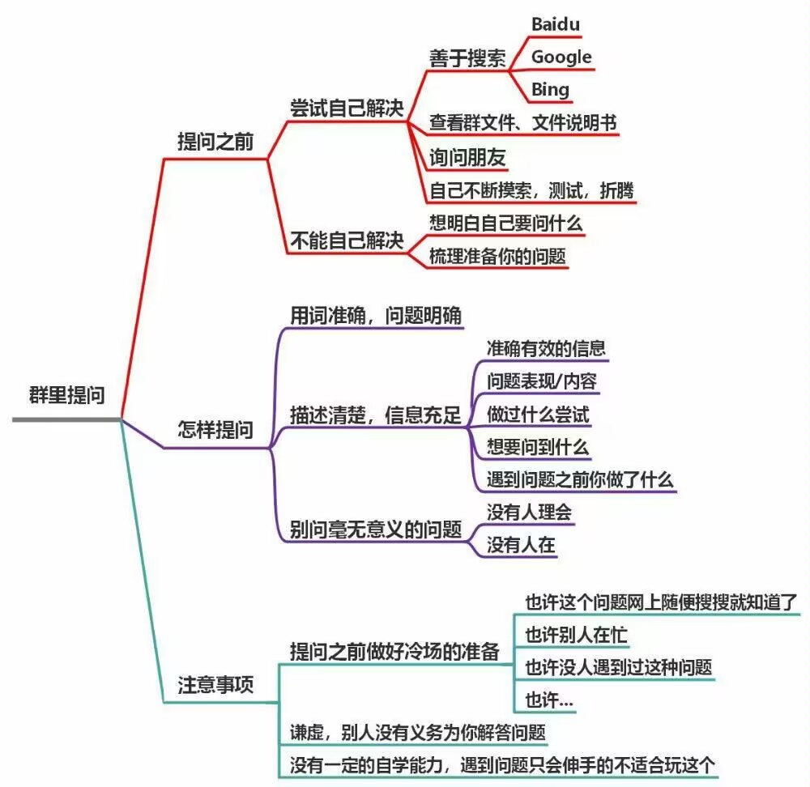
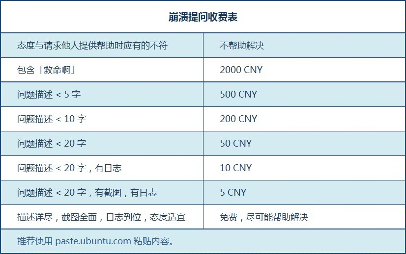

Celeste Wiki
提问的艺术-求求你展开看一下吧
 
你在询问前必须做足了功课（当然偶尔随便问问是没问题的）, 实在走投无路了, 再谦虚的向他人询问并提供详细的信息（log日志, 截图, 录屏等）, 不要惜字如金(, 不然交流起来真的很累, 同时做好冷场的心理准备, 在得到帮助后要表达自己的感激, 就算是帮不上忙的建议, 最好也回应例如“好像什么都没发生耶”, “报错了, 上面说...”之类的 (不然别人根本不知道你是没看到消息, 还是没解决问题, 又或是懒得理他, 甚至是问题解决了都没个信儿的)
同时我的建议是你在问出这个问题后请把qq的勿扰模式关了(并不是所有人都有@的习惯的), 以便在第一时间得到消息并回复
本Wiki旨在对蔚蓝做个资源和教程上的整合, 整体偏向制图, 力求你的大部分疑问都能在这获得解答(偏冷门/进阶的可以问群友), 减少重复性问题, 解放大佬双手, 虽然现在还是相对简陋, 但已初具雏形, 理想情况下你有什么没办法解决的问题都可以在Wiki这里找, 找不到就问群友, 然后我看到会加上, 以此不断完善内容
如果你有更好的建议或者要帮忙补充内容欢迎在github上提issue和pr, 或者在QQ: 3079351998上找我, 感激不尽🥰
感谢
Myn,Sap,SDBnkaf,Black_Ice,无对Wiki提供的帮助感谢
Sap给Wiki提供了一个温暖的家😭感谢每一位对蔚蓝社区做出了贡献的人